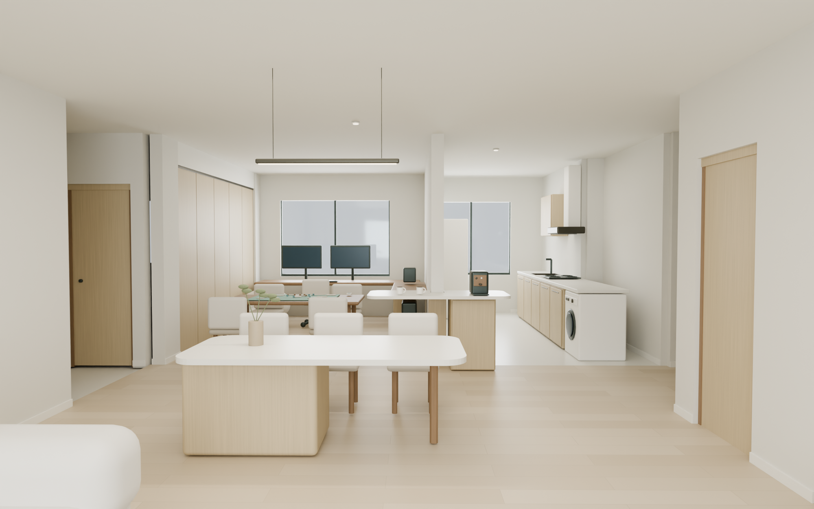
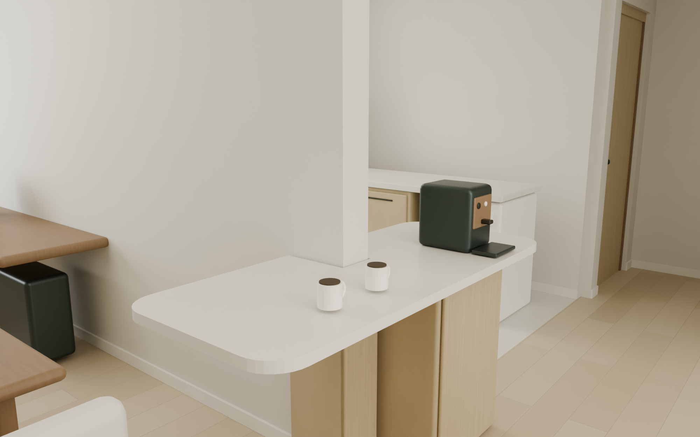
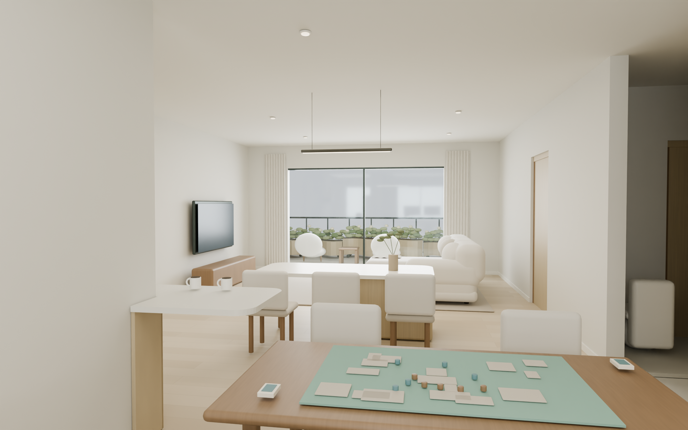
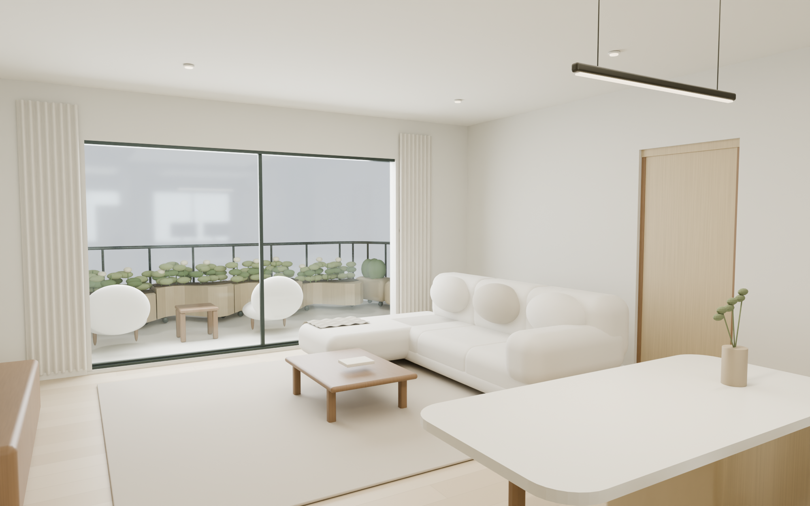

2-21101 · INTERIOR
把装好的家，看清楚。
旋转看三维模型
整体关系
抱墙吧台
书房回望
客厅

01 · 从客厅看餐岛、厨房与书房
前景是餐岛；后方吧台包住墙端，厨房与书房分别位于墙的两侧。

02 · U 形抱墙端吧台
台面绕着完整的墙端展开，包覆木饰面与底柜连接成一体。

03 · 从书房回看客餐厅
前景是桌游桌，中间是餐岛，远处连接客厅与开放露台。

04 · 餐岛旁的客厅
柔软 L 型沙发、低矮家具、浅原木与自然采光。